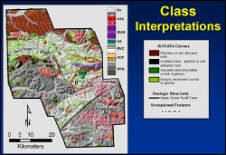

Remote Predictive Mapping (RPM) is an integrated geological mapping approach, in which existing geological map data are re-compiled on the basis of the interpretation of various types of remotely sensed geoscience data as well as legacy field data before, and during, fieldwork (definition by Schetselaar, E.M.; Harris, J.R.; Lynds, T.; and de Kemp, E.A.). A predictive map, produced without collection of new, field-based data, may also serve as a first-order geologic map in areas where field-based studies cannot be accomplished due to expense of field access or remoteness.
RPM approach has tremendous potential in the field of mineral exploration. Dr. Milton Wiltse, former Director of the Alaska Division of Geological and Geophysical Surveys (DGGS), has recently been following it for mineral exploration studies in parts of Alaska. This figure shows an example of a predictive map generated from processed airborne geophysics data. (Image courtesy, Wiltse, M., 2010)
Wiltse, M., Prakash, A., Burns, L., 2009, Image analysis of airborne geophysical data from the Salcha river-Pogo area, Alaska. Canadian Journal of Remote Sensing, 35(S1), S56-S71. (abstract; request reprint for personal use).
Oommen, T., Prakash, A., Misra, D., Naidu, S., Kelley, J.J., and Bandopadhyay S., 2008, GIS based marine platinum exploration, Goodnews bay region, southwest Alaska, Marine Georesources and Geotechnology, 26(1), 1-18. (abstract; request reprint for personal use).